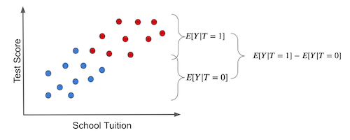

01 - 因果性导论#
为什么要学？#
首先，你可能在想：这对我有什么好处？答案如下：
数据科学今非昔比（或终成其是）#
数据科学家被《哈佛商业评论》誉为21 世纪最性感的职业。这绝非虚言。十年来，数据科学家一直处于聚光灯下。人工智能专家的薪资堪比体育巨星。在追逐名利的过程中，数百名年轻专业人士疯狂投身于这场淘金热，只为尽快获得数据科学家的头衔。围绕这股热潮，全新的产业如雨后春笋般涌现。神奇的教学方法声称无需接触数学公式就能让你成为数据科学家。咨询专家们承诺，只要企业能挖掘数据潜力，就能收获百万财富。人工智能或机器学习被称为新时代的电力，而数据则是新石油。
在这一切发生的同时，经济学家们试图解答教育对个人收入的真实影响，生物统计学家们努力探究饱和脂肪是否会增加心脏病发作的概率，心理学家则致力于验证肯定的言语是否真能带来更美满的婚姻。而我们似乎忽略了一点：其实早就有人一直在用“老派”的方式进行数据科学研究。说实话，数据科学并不是一个新领域。我们之所以现在觉得它“新”，只是因为媒体的大肆宣传才让我们如此关注它。
借用 Jim Collins 的一个比喻：想象你正往杯中倒一杯你最喜欢的冰啤酒。若操作得当，杯中绝大部分是酒液，顶部仅浮着一指厚的泡沫层。这杯啤酒恰似数据科学。
酒液象征着数据科学的本质——统计学基础、科学探索精神以及对复杂问题的热忱。数百年来，这些核心要素已被证明具有不可估量的价值。
而泡沫则代表那些建立在虚幻预期之上的浮华之物，终将消散无踪。
而这层泡沫破灭的速度可能超乎你的想象。正如《The Economist》所言
那些预测人工智能将改变世界的咨询公司，同时也报告称，现实中的企业管理者发现 AI 很难真正落地，市场的热情也正在逐渐降温。研究公司高德纳（Gartner）的斯维特兰娜·西库拉（Svetlana Sicular）表示，2020 年可能是 AI 掉进该公司著名的“炒作周期”下坡阶段的一年。投资者也开始对“随波逐流”的现象保持警惕：风险投资基金 MMC 对欧洲 AI 创业公司的调查发现，有 40% 的公司似乎根本没有在使用任何 AI 技术。
作为数据科学家——或者更准确地说，作为”纯粹”的科学家——我们在这场狂热中应当如何自处？明智之举是首先学会忽略这些泡沫。我们追求的是实质内容。数学与统计学的价值亘古长青，现在也不会例外。其次，要认清真正赋予你工作价值的是核心能力，而非那些尚未被掌握的最新炫目工具。
最后但同样重要的是，请记住学习没有捷径可走。数学与统计学的知识之所以珍贵，恰恰在于其习得之艰难。倘若人人皆能轻易掌握，供过于求必将使其价值贬损。因此，振作起来！竭尽所能学好它们。更何况，何乐而不为呢？让我们在这场只属于 “求真敢为者” 的旅程中，尽情享受沿途的乐趣吧。

回答另一类的问题#
当前的机器学习在预测类问题上表现非常出色。正如 Ajay Agrawal、Joshua Gans 和 Avi Goldfarb 在《Prediction Machines》一书中所说的那样：“新一代人工智能并未真正带来‘智能’，而是赋予了我们智能的关键组成部分——预测能力。”我们可以用机器学习做出各种惊艳的应用，但前提是——我们必须将问题表述成一个预测问题：
想实现英语到中文的翻译吗？那就构建一个机器学习模型，在输入英语句子时预测对应的中文句子。
想要识别人脸？那就创建一个机器学习模型，预测图片某部分是否存在人脸。
想打造一辆自动驾驶汽车？那就用一个机器学习模型，根据车辆周围图像和传感器数据，预测方向盘转向角度及刹车与油门的压力。
然而，机器学习并非万能良药。在严格界定的范围内，它能创造奇迹；但若数据稍有偏离模型所适应的范围，它也可能惨败。再举《Prediction Machines》中的一个例子：“在许多行业中，低价常与低销量相关联。以酒店业为例，旅游淡季时价格低廉，而需求高峰、酒店爆满时价格则居高不下。基于此类数据，一个天真的预测可能会认为提高价格将带来更多客房销售。”
机器学习在处理这类逆向因果关系的问题上表现尤为糟糕。它们要求我们回答“假设”性问题，经济学家称之为反事实推理。例如：
如果我现在为商品标价时采用另一个价格，结果会怎样？
如果我选择低糖饮食而非目前的低脂饮食，又会发生什么？
如果我在银行工作，放贷时改变客户筛选标准，会对收益有何影响？
如果我是地方政府官员，怎样才能改进教育体系？是要每个孩子配备一台平板？还是应该建设一座传统图书馆？
这些问题背后，都隐藏着我们真正想要解答的因果问题。因果问题不仅存在于商业决策中（如如何提高销量），也贯穿于我们每个人关心的生活命题：
上名校是否真的有助于我获得更高收入？（教育是否导致更高的收入？）
移民是否会影响我找工作的机会？（移民是否导致失业率上升？）
给穷人发放现金是否能降低犯罪率？
无论身处何种领域，你很可能已经或终将需要回答某种类型的因果问题。遗憾的是，对机器学习而言，我们无法依赖相关性预测来解决这类问题。回答这类问题比多数人想象的更具挑战性。你的父母可能反复告诫你”相关不等于因果”，”相关不等于因果”。但事实上，解释其中缘由需要更深入的探讨。
而这，正是本书开篇要探讨的主题。至于本书接下来的章节，将致力于探索如何使相关转化为因果。
当“相关性”就是“因果性”#
从直觉上讲，我们其实大致知道为什么相关性不能等同于因果性。
如果有人告诉你：“那些给学生配发平板的学校，表现普遍比没配平板的学校更好”，你可能很快就会反驳：有可能这些发得起平板的学校本身就更富裕。
因此，即使不发平板，他们的学生可能也比平均水平表现更好。
正因如此，我们不能断定“在课堂上给学生发平板会提高学习成绩”；我们只能说“发平板”这件事和“更高的成绩”在数据上存在相关性。比如在巴西，可以通过 ENEM 成绩来衡量：
Show code cell source
import pandas as pd
import numpy as np
from scipy.special import expit
import seaborn as sns
from matplotlib import pyplot as plt
from matplotlib import style
style.use("fivethirtyeight")
np.random.seed(123)
n = 100
tuition = np.random.normal(1000, 300, n).round()
tablet = np.random.binomial(1, expit((tuition - tuition.mean()) / tuition.std())).astype(bool)
enem_score = np.random.normal(200 - 50 * tablet + 0.7 * tuition, 200)
enem_score = (enem_score - enem_score.min()) / enem_score.max()
enem_score *= 1000
data = pd.DataFrame(dict(enem_score=enem_score, Tuition=tuition, Tablet=tablet))
Show code cell source
plt.figure(figsize=(6,8))
sns.boxplot(y="enem_score", x="Tablet", data=data).set_title('ENEM score by Tablet in Class')
plt.show()
为了超越简单的直觉，我们首先建立一些符号体系。这将是我们讨论因果关系的日常语言——把它当作我们这些“求真敢为者”的通用语，在未来一次次关于因果推断的战斗中，我们会用这套语言彼此辨识、并高声呐喊。
我们把 \(T_i\) 定义为为单位 i 是否接受处理（treatment）的变量。
\( T_i=\begin{cases} 1 \ \text{如果单位i接受了处理}\\ 0 \ \text{否则}\\ \end{cases} \)
此处所说的“处理”指的是我们希望探究其效果的某种干预措施的术语。在本例中，该处理即为向学生发放平板电脑。（注：有时你也可能会看到用\(D\)来表示处理，而不是\(T\)。）
接下来，我们用 \(Y_i\) 表示单元 i 的观测结果变量。
这个结果变量就是我们关注的核心。我们希望了解的是：处理是否对结果有影响。以“平板教学”为例，这个结果就是学生的学业表现。
这时，问题开始变得有趣起来。因果推断的根本问题在于，我们永远无法同时观察同一单位接受处理与未接受处理的两种状态下的结果。这就像面前有两条分岔的道路，而我们只能知晓所选之路的前方风景。正如罗伯特·弗罗斯特（Robert Frost）在他的诗中所写：
两条小路分岔在金黄的树林中，
可惜我不能同时踏上两条，
我站了很久，
沿着其中一条望去，直到它在林中转弯，消失不见。
为了真正理解这个问题，我们将频繁使用 潜在结果这一概念进行讨论。
它们之所以称为潜在，是因为它们实际上并未发生，而是代表了在采取某种干预措施后 可能发生的情况。我们有时将实际发生的潜在结果称为事实性结果，而未发生的则称为反事实结果。
关于符号，我们引入一个额外的下标：
\(Y_{0i}\) 表示未接受处理时单元 i 的潜在结果。
\(Y_{1i}\) 表示 同一单元 i在接受处理后的潜在结果。
有时潜在结果可能以函数形式表示为 \(Y_i(t)\)，需注意区分。 \(Y_{0i}\) 可能是 \(Y_i(0)\) ，而 \(Y_{1i}\) 可能是 \(Y_i(1)\)。本文多数情况下将采用下标表示法。

回到我们的例子，
如果学生 i 所在的教室使用了平板电脑，那么\(Y_{1i}\)就表示他的学业表现。无论实际情况如何，这对\(Y_{1i}\)并无影响，结果始终相同。如果学生 i 确实拿到了平板，我们就能观测到\(Y_{1i}\)；如果没有拿到，我们观测到的是\(Y_{0i}\)。
请注意：即便我们没有观测到\(Y_{1i}\)，它依然是“存在”的——只是我们无法看到。这种我们看不到但理论上存在的潜在结果，就被称为“反事实潜在结果”（counterfactual potential outcome）。
在定义了潜在结果之后，我们就可以写出个体处理效应：
\(Y_{1i} - Y_{0i}\)
当然，由于“因果推断的基本难题”（只能观测其中一个潜在结果），我们永远无法直接知道某个个体的处理效应。所以，与其去估计每个个体的因果效应，不如转而去估计一个更容易的量：平均处理效应（Average Treatment Effect, ATE）：
\(ATE = E[Y_1 - Y_0]\)
其中， E[...] 表示期望值。另一个更易估计的量是对已接受处理者的平均处理效应（Average Treatment Effect on the Treated, ATT）：
\(ATT = E[Y_1 - Y_0 | T=1]\)
虽然我们无法同时看到两种潜在结果，但为了讨论方便，假设我们能够做到。假设因果推断之神被我们在统计战役中英勇奋斗的精神所感动，赐予我们如神般洞察潜在替代结果的能力。凭借此力，假设我们收集了 4 所学校的数据，知晓它们是否向学生提供平板电脑及其在年度学术测试中的成绩。此处，平板电脑即处理变量，故 \(T=1\) 表示学校向学生提供平板电脑，\(Y\) 则为测试成绩。
Show code cell source
pd.DataFrame(dict(
i= [1,2,3,4],
Y0=[500,600,800,700],
Y1=[450,600,600,750],
T= [0,0,1,1],
Y= [500,600,600,750],
TE=[-50,0,-200,50],
))
| i | Y0 | Y1 | T | Y | TE | |
|---|---|---|---|---|---|---|
| 0 | 1 | 500 | 450 | 0 | 500 | -50 |
| 1 | 2 | 600 | 600 | 0 | 600 | 0 |
| 2 | 3 | 800 | 600 | 1 | 600 | -200 |
| 3 | 4 | 700 | 750 | 1 | 750 | 50 |
这里的 \(ATE\) 就是最后一列的平均值，即处理效应的平均值：
\(ATE=(-50 + 0 - 200 + 50)/4 = -50\)
这意味着平板电脑平均使学生的学业成绩降低了50分。此处的 \(ATT\) 将是当 \(T=1\) 时最后一列的平均值:
\(ATT=(- 200 + 50)/2 = -75\)
这表明，对于接受处理的学校，平板电脑平均使学生的学业成绩降低了 75 分。当然，我们永远无法确知这一点。实际上，上表将呈现如下情况：
Show code cell source
pd.DataFrame(dict(
i= [1,2,3,4],
Y0=[500,600,np.nan,np.nan],
Y1=[np.nan,np.nan,600,750],
T= [0,0,1,1],
Y= [500,600,600,750],
TE=[np.nan,np.nan,np.nan,np.nan],
))
| i | Y0 | Y1 | T | Y | TE | |
|---|---|---|---|---|---|---|
| 0 | 1 | 500.0 | NaN | 0 | 500 | NaN |
| 1 | 2 | 600.0 | NaN | 0 | 600 | NaN |
| 2 | 3 | NaN | 600.0 | 1 | 600 | NaN |
| 3 | 4 | NaN | 750.0 | 1 | 750 | NaN |
你或许会说，这显然不够理想，但我难道不能计算处理组的均值并与未处理组的均值进行比较吗？换言之，难道不能直接进行 \(ATE=(600+750)/2 - (500 + 600)/2 = 125\) 操作吗？答案是不行！请注意结果差异之大。你已犯下将相关误认为因果的最严重错误。要理解其中缘由，让我们深入探究因果推断的主要敌人。
偏差#
偏差正是使“相关性 ≠ 因果性”的关键原因。
幸运的是，凭借直觉我们就能轻松理解它。让我们回顾课堂平板电脑的案例。当面对”提供平板电脑的学校学生成绩更优异”这一论断时，我们可以反驳说，这些学校即便没有平板电脑，成绩可能依然更高。因为它们很可能比其他学校资金更充裕，从而能聘请更优秀的教师、提供更好的教室设施等。换言之，问题在于接受处理（配备平板电脑）的学校与未接受处理的学校根本不具备可比性。
如果我们用“潜在结果”的符号来表达这一点：接受处理的学校的 \(Y_0\)（即如果它们没发平板时的成绩）与 未接受处理学校的\(Y_0\)（真实的无平板成绩）是不同的。要记住，处理组的 \(Y_0\) 是反事实（counterfactual），我们无法观察到它，只能推理它。在这个特定案例中，我们可以依靠现实经验进一步推理。我们有理由相信，处理组的\(Y_0\)本来就比未处理组的\(Y_0\)更高。因为能给学生配平板的学校，也往往有其他资源，这些都会促成更高的成绩。让我们停下来消化一下这点，理解“潜在结果”概念需要时间。请重读本段并确保理解其含义。
有了这个基础，我们可以用一个基本的数学公式来展示为何相关不等于因果。相关性的计算方式是 \(E[Y|T=1] - E[Y|T=0]\)，在我们的例子中，这表示拥有平板电脑的学校平均测试分数减去没有平板电脑的学校平均测试分数。而因果关系的正确计算方式是 \(E[Y_1 - Y_0]\)。
我们现在来分析“相关性指标”，并将其中的观测结果替换成潜在结果，以探究它们之间是如何联系的。对于接受处理的个体，观察到的结果是 \(Y_1\)；而对于未接受处理的个体，观察到的结果则是 \(Y_0\)。
\( E[Y|T=1] - E[Y|T=0] = E[Y_1|T=1] - E[Y_0|T=0] \)
现在，让我们对 \(E[Y_0|T=1]\)进行加减运算。这是一个反事实结果，它揭示了如果接受处理的个体未接受处理，其原本可能的结果会是什么。
\( E[Y|T=1] - E[Y|T=0] = E[Y_1|T=1] - E[Y_0|T=0] + E[Y_0|T=1] - E[Y_0|T=1] \)
最后，我们重新排列各项，合并部分期望值，于是乎结果显而易见：
\( E[Y|T=1] - E[Y|T=0] = \underbrace{E[Y_1 - Y_0|T=1]}_{ATT} + \underbrace{\{ E[Y_0|T=1] - E[Y_0|T=0] \}}_{BIAS} \)
这段简单的数学涵盖了我们在因果问题中遇到的所有难题。我无法强调你理解它的每一个方面有多么重要。如果你被迫要在手臂上纹点什么，这个方程应该是个不错的选择。它值得你珍视并理解其传达的信息，就像可以百般解读的圣典。事实上，让我们更深入地探讨一下。我们将其分解，看看其中的一些含义。首先，这个方程说明了为什么相关不等于因果。如我们所见，相关性等于处理组效应加上一个偏差项。偏差来源于处理组和对照组在处理前就存在的差异，假设两者均未接受处理。现在，当有人告诉我们课堂上的平板电脑能提高学业成绩时，我们可以明确指出为何持怀疑态度。我们认为，在这个例子中，\(E[Y_0|T=0] < E[Y_0|T=1]\)，即那些有能力为孩子提供平板电脑的学校本身就比无力提供的学校更好，与是否使用平板电脑无关。
为何会出现这种情况？待我们深入讨论混杂因素时将进一步阐述，但此刻你可以理解为偏差的产生源于许多我们无法控制的因素与处理同时发生变化。因此，接受与未接受平板电脑教学的学校不仅在设备配置上存在差异，还在学费成本、地理位置、师资力量等方面有所不同。要断言课堂平板电脑能提升学业表现，我们需要确保这两类学校在其他条件上平均而言是相似的。
Show code cell source
plt.figure(figsize=(10,6))
sns.scatterplot(x="Tuition", y="enem_score", hue="Tablet", data=data, s=70).set_title('ENEM score by Tuition Cost')
plt.show()
既然我们已经理解了问题所在，现在让我们来看看解决方案。我们还可以探讨要使相关等同于因果所需满足的条件。若 \(E[Y_0|T=0] = E[Y_0|T=1]\)，那么相关即等同于因果！ 理解这一点不仅仅是记住这个等式，其背后还有着强有力的直观论证。称 \(E[Y_0|T=0] = E[Y_0|T=1]\) 意味着处理组与对照组在处理前具有可比性。或者说，当被处理者未接受处理时，若能观测到其 \(Y_0\)，其结果将与未处理者相同。从数学上看，偏差项将因此消失：
\( E[Y|T=1] - E[Y|T=0] = E[Y_1 - Y_0|T=1] = ATT \)
此外，若处理组与未处理组仅在处理本身存在差异，则 \(E[Y_0|T=0] = E[Y_0|T=1]\)，此时处理组所受的因果影响与未处理组相同（因为两者极为相似）。
\( \begin{align} E[Y_1 - Y_0|T=1] &= E[Y_1|T=1] - E[Y_0|T=1] \\ &= E[Y_1|T=1] - E[Y_0|T=0] \\ &= E[Y|T=1] - E[Y|T=0] \end{align} \)
在此情况下，均值差异即成为因果效应：
\( E[Y|T=1] - E[Y|T=0] = ATT \)
此外，若处理组与未处理组仅在干预措施本身存在差异，我们同样满足 \(E[Y_1|T=0] = E[Y_1|T=1]\)条件，即确保两组对干预的反应相似。此时，处理组与未处理组不仅在干预前可互换，干预后亦保持可互换性。这种情况下， \(E[Y_1 - Y_0|T=1]=E[Y_1 - Y_0|T=0]\) 且
\( E[Y|T=1] - E[Y|T=0] = ATT = ATE \)
鉴于其重要性，我认为有必要通过直观图示再次阐释。若对处理组与未处理组进行简单均值比较（蓝点代表未接受干预组，即未使用平板电脑），结果如下：

需注意两组结果差异可能源于两个因素：
处理效果：考试成绩的提高源于给孩子们提供了平板电脑。
测试成绩的部分差异可归因于优质教育的高昂学费。在此情境下，接受处理与未接受处理的群体之所以不同，是因为前者承担了显著更高的学费成本。而处理组与对照组之间的其他差异并非由处理本身引起。
个体处理效应是指某单元的实际结果与其在假设接受另一种处理时可能产生的理论结果之间的差异。唯有具备如神明般观测潜在结果的能力（如下方左图所示），我们才能获知真实的处理效应。这些反事实结果以浅色标识。

右图中展示了先前讨论的偏差现象。当强制所有个体不接受处理时，我们仅能观察到 \(T_0\) 潜在结果，此时偏差便显现出来。通过比较处理组与对照组的差异可以发现：若二者存在系统性差异，则说明存在非处理因素导致两组分化。这种干扰因素即为偏差，它会掩盖真实的处理效应。
现在，将此与一个无偏差的假设情境进行对比。假设平板电脑是随机分配给学校的。在这种情况下，富裕学校和贫困学校获得干预的机会均等。干预措施将在学费分布范围内得到良好分配。

在此情形下，接受干预与未接受干预群体间的结果差异即为平均因果效应。这是因为除了干预本身外，干预组与对照组之间不存在其他差异来源。我们观察到的所有差异都必须归因于此。换言之，这种情况下不存在偏差。

若设定所有人均不接收干预，仅观察 \(Y_0\)状态，我们将发现干预组与对照组之间不存在差异。
这正是因果推断所致力于解决的艰巨任务。其核心在于寻找巧妙方法消除偏差，使处理组与未处理组具有可比性，从而确保我们所观察到的差异仅反映平均处理效应。归根结底，因果推断旨在拨开所有错觉与误读的迷雾，揭示世界运行的真相。既然我们已经理解这一点，现在就可以继续掌握那些消除偏差的最有力方法——这些”求真敢为者”的武器，来识别因果效应。
核心要点#
到目前为止，我们已经知道了：相关性 ≠ 因果性。
更重要的是，我们也准确理解了为什么不等同，以及如何让相关性接近因果性。
我们引入了“潜在结果（potential outcomes）”的符号，作为理解因果推理的核心工具。借助它，我们学会了把统计学问题看作两个可能的现实：一个是接受处理的现实，另一个则是不接受处理的现实。但遗憾的是，我们每次只能观测其中一个现实，这正是因果推断的根本难题所在。
接下来，我们将学习几种基本的估计因果效应的方法， 从最经典、也最可靠的手段——随机实验（Randomized Trial） 开始。
在此过程中，我也会穿插回顾一些统计学基础概念。
最后，我想用一句常出现在因果推断课堂上的台词作为收尾， 它出自一部功夫剧：
“一个人的命运，早已写好。人只能顺着命运走完这一生。” —— 凯恩（Caine）
“是的，但每个人又的确可以选择如何生活。 虽然这两句话看似矛盾，却都是真理。” —— Old Man
参考文献#
我愿将这一系列作品视为对 Joshua Angrist、Alberto Abadie 和 Christopher Walters 杰出计量经济学课程的致敬。第一部分的大部分思想源自他们在美国经济学会授课的内容。在艰难的 2020 年，正是观看他们的课程视频让我保持了理智。
我还想引用 Angrist 的精彩著作。它们向我展示了计量经济学（他们称之为“Metrics”）不仅极为实用，而且充满乐趣。
最后还要感谢 Miguel Hernán 和 Jamie Robins 的《Causal Inference》一书。它是我在面对最棘手的因果问题时的可靠伙伴。

参与贡献#
《Causal Inference for the Brave and True》 是一本关于因果推断的开源教材，致力于以经济上可负担、认知上可理解的方式，普及这门“科学的统计基础”。全书基于 Python，仅使用自由开源软件编写，原始英文版本由 Matheus Facure 编写与维护。
本书的中文版由黄文喆与许文立教授合作翻译，并托管在 GitHub 中文主页。希望本地化的内容能帮助更多中文读者学习和掌握因果推断方法。
如果你觉得这本书对你有帮助，并希望支持该项目，可以前往 Patreon 支持原作者。
如果你暂时不方便进行经济支持，也可以通过以下方式参与贡献：
修正错别字
提出翻译或表达建议
反馈你未能理解的部分内容
欢迎前往英文版或中文版仓库点击 issues 区 或 中文版 issues 区 提出反馈。
最后，如果你喜欢这本书的内容，也请将其分享给可能感兴趣的朋友，并为项目在 GitHub 上点亮一颗星：英文版仓库 / 中文版仓库。